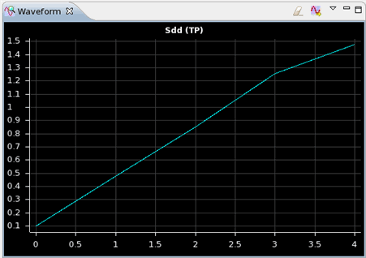

Showing the resulting dynamic DC signal waveform
In this dynamic DC test, the rising voltage on the power pin (Vdd) results in a voltage ramp on the signal pin.
About this task
You can display the resulting waveform on the signal pin.
Before you begin
To show the resulting waveform, you must have executed the dynamic test, but the pins must not be disconnected, because this would invalidate the measurement results.
The executed pattern must be expanded to see the results. If the pattern view is not expanded, it will show the force values at all test points in this pattern in order, ignoring any sequencer instructions.
To show the results of a specific site, select the site in the Site Control window.
Procedure
Results
The graphic shows the resulting waveform. The vertical y-axis shows the measured value, the x-axis is the value index.

What to do next
In case of any errors you must debug the dynamic DC test.
Functional changes
- Introduced in SmarTest 6.5.2